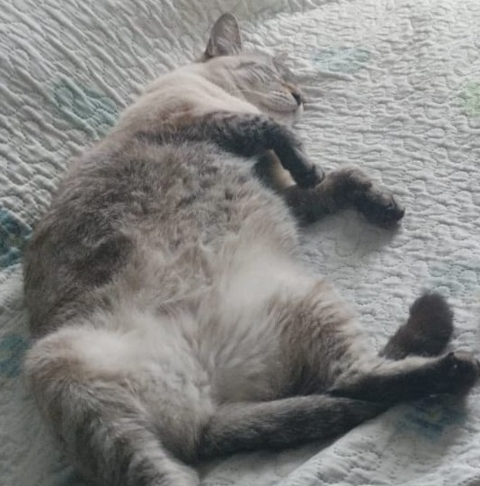
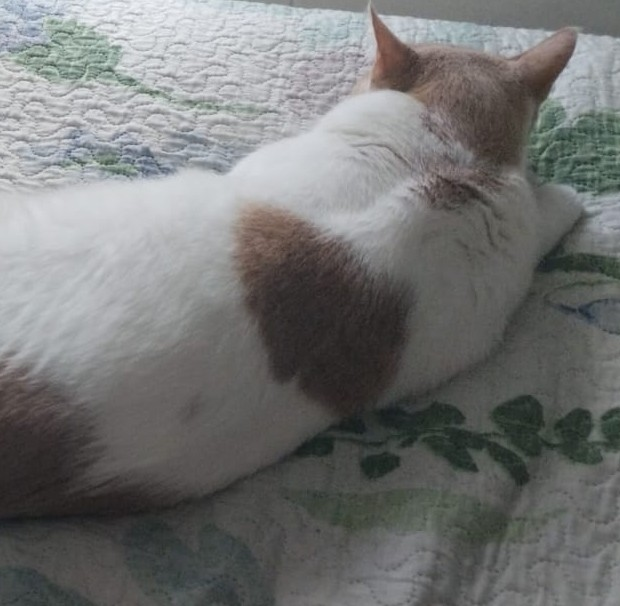

Our team
Dylan Sanabria

The main developer of the project. He was the one to code the whole page. He was born the 21st of January of the year 2000 (That's what the email says). Was enrolled in the Diana Oese Bilingual School at the age of five years and stayed there until fifth grade. Currently a student at Lacordaire Bilingual School in Colombia and part of the Dual Diploma project by Catholic Virtual. Has been first place in the knowledge tests (Prueba Saber in the original language) since he entered his school in 2023. Likes to procrastinate so the project did take a while to be released. Actively participating in Model United Nation events and starting to participate in Volleyball tournaments.
Nami

Born about 4 or 5 years ago, was abandoned on a terrace because of not being of pure race and haunted by angry dogs for almost a year even while she had to care for her kittens. Was rescued and put in a shelter and later adopted by the developer's family. Now, she has food and a loving family and serves as great moral support to keep going. Even if everything looks unstable and that it will soon go down, she sleeps. And then, she keeps sleeping. So we know that even if we have problems, she will sleep. That's how sleepy she is. Now that moral support was the key to success in this project, so she sleeps for the developer that hardly sleeps 4 hours a day.
Mono

Born about 5 years ago, most of his history is unknown. Was adopted around February and now is part of the family. Scares Nami as she thinks he is strange and then she attacks him and then plays as the victim. He jumps and tries to sleep on the developer's lap, reminding him of his cat and boosting his production until his face is covered in cat fur and has to go wash his face. Additionally, has long claws and likes to be around people. He's either not too smart or disobedient. Either way, he's still lovely and fat.
Kate
The aplication used to write all the code. No, the developer is currently not a VS code user. They use Kate because it is KDE's default advanced text editor which is as far as it has been used for these projects, really great. Yes, the developer is a Linux user, more precisely a Debian 13 OS and a Plasma KDE desktop environment. That's why word documents won't load correctly, sadly. But as far as web development goes, this is good enough.